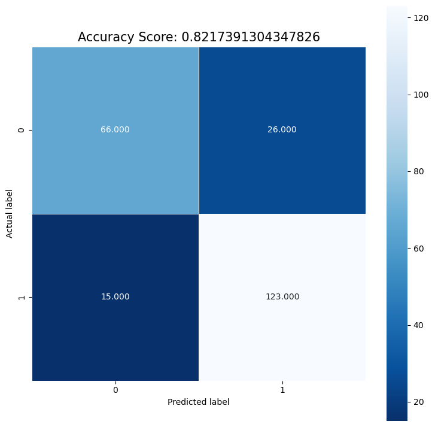

Data Modeling#
from sklearn.preprocessing import StandardScaler
from sklearn.ensemble import RandomForestRegressor
import sklearn
import numpy as np
import pandas as pd
from matplotlib import pyplot as plt
# Import raw data
raw_data = pd.read_csv('../data/heart.csv')
raw_data.head()
| Age | Sex | ChestPainType | RestingBP | Cholesterol | FastingBS | RestingECG | MaxHR | ExerciseAngina | Oldpeak | ST_Slope | HeartDisease | |
|---|---|---|---|---|---|---|---|---|---|---|---|---|
| 0 | 40 | M | ATA | 140 | 289 | 0 | Normal | 172 | N | 0.0 | Up | 0 |
| 1 | 49 | F | NAP | 160 | 180 | 0 | Normal | 156 | N | 1.0 | Flat | 1 |
| 2 | 37 | M | ATA | 130 | 283 | 0 | ST | 98 | N | 0.0 | Up | 0 |
| 3 | 48 | F | ASY | 138 | 214 | 0 | Normal | 108 | Y | 1.5 | Flat | 1 |
| 4 | 54 | M | NAP | 150 | 195 | 0 | Normal | 122 | N | 0.0 | Up | 0 |
Preparing raw_data to features and labels#
raw_features = raw_data.columns[:-1]
raw_features
Index(['Age', 'Sex', 'ChestPainType', 'RestingBP', 'Cholesterol', 'FastingBS',
'RestingECG', 'MaxHR', 'ExerciseAngina', 'Oldpeak', 'ST_Slope'],
dtype='object')
raw_labels = raw_data.columns[-1]
raw_labels
'HeartDisease'
One-hot encode categorical variables#
from sklearn.preprocessing import OneHotEncoder
from sklearn.compose import make_column_transformer
from seaborn import load_dataset
import pandas as pd
from sklearn.preprocessing import OneHotEncoder
# create an encoder and fit the dataframe
categorical_columns= ['Sex', 'ChestPainType','RestingECG', 'ExerciseAngina', 'ST_Slope' ]
categorical_data = raw_data[categorical_columns]
enc = OneHotEncoder(sparse=False).fit(categorical_data)
encoded = enc.transform(categorical_data)
# convert it to a dataframe
encoded_df = pd.DataFrame(
encoded,
columns=enc.get_feature_names_out()
)
encoded_df.head()
/srv/conda/envs/notebook/lib/python3.10/site-packages/sklearn/preprocessing/_encoders.py:808: FutureWarning: `sparse` was renamed to `sparse_output` in version 1.2 and will be removed in 1.4. `sparse_output` is ignored unless you leave `sparse` to its default value.
warnings.warn(
| Sex_F | Sex_M | ChestPainType_ASY | ChestPainType_ATA | ChestPainType_NAP | ChestPainType_TA | RestingECG_LVH | RestingECG_Normal | RestingECG_ST | ExerciseAngina_N | ExerciseAngina_Y | ST_Slope_Down | ST_Slope_Flat | ST_Slope_Up | |
|---|---|---|---|---|---|---|---|---|---|---|---|---|---|---|
| 0 | 0.0 | 1.0 | 0.0 | 1.0 | 0.0 | 0.0 | 0.0 | 1.0 | 0.0 | 1.0 | 0.0 | 0.0 | 0.0 | 1.0 |
| 1 | 1.0 | 0.0 | 0.0 | 0.0 | 1.0 | 0.0 | 0.0 | 1.0 | 0.0 | 1.0 | 0.0 | 0.0 | 1.0 | 0.0 |
| 2 | 0.0 | 1.0 | 0.0 | 1.0 | 0.0 | 0.0 | 0.0 | 0.0 | 1.0 | 1.0 | 0.0 | 0.0 | 0.0 | 1.0 |
| 3 | 1.0 | 0.0 | 1.0 | 0.0 | 0.0 | 0.0 | 0.0 | 1.0 | 0.0 | 0.0 | 1.0 | 0.0 | 1.0 | 0.0 |
| 4 | 0.0 | 1.0 | 0.0 | 0.0 | 1.0 | 0.0 | 0.0 | 1.0 | 0.0 | 1.0 | 0.0 | 0.0 | 0.0 | 1.0 |
modified_df = pd.concat([raw_data[raw_data.columns.difference(categorical_columns)], encoded_df], axis = 1)
modified_df
| Age | Cholesterol | FastingBS | HeartDisease | MaxHR | Oldpeak | RestingBP | Sex_F | Sex_M | ChestPainType_ASY | ... | ChestPainType_NAP | ChestPainType_TA | RestingECG_LVH | RestingECG_Normal | RestingECG_ST | ExerciseAngina_N | ExerciseAngina_Y | ST_Slope_Down | ST_Slope_Flat | ST_Slope_Up | |
|---|---|---|---|---|---|---|---|---|---|---|---|---|---|---|---|---|---|---|---|---|---|
| 0 | 40 | 289 | 0 | 0 | 172 | 0.0 | 140 | 0.0 | 1.0 | 0.0 | ... | 0.0 | 0.0 | 0.0 | 1.0 | 0.0 | 1.0 | 0.0 | 0.0 | 0.0 | 1.0 |
| 1 | 49 | 180 | 0 | 1 | 156 | 1.0 | 160 | 1.0 | 0.0 | 0.0 | ... | 1.0 | 0.0 | 0.0 | 1.0 | 0.0 | 1.0 | 0.0 | 0.0 | 1.0 | 0.0 |
| 2 | 37 | 283 | 0 | 0 | 98 | 0.0 | 130 | 0.0 | 1.0 | 0.0 | ... | 0.0 | 0.0 | 0.0 | 0.0 | 1.0 | 1.0 | 0.0 | 0.0 | 0.0 | 1.0 |
| 3 | 48 | 214 | 0 | 1 | 108 | 1.5 | 138 | 1.0 | 0.0 | 1.0 | ... | 0.0 | 0.0 | 0.0 | 1.0 | 0.0 | 0.0 | 1.0 | 0.0 | 1.0 | 0.0 |
| 4 | 54 | 195 | 0 | 0 | 122 | 0.0 | 150 | 0.0 | 1.0 | 0.0 | ... | 1.0 | 0.0 | 0.0 | 1.0 | 0.0 | 1.0 | 0.0 | 0.0 | 0.0 | 1.0 |
| ... | ... | ... | ... | ... | ... | ... | ... | ... | ... | ... | ... | ... | ... | ... | ... | ... | ... | ... | ... | ... | ... |
| 913 | 45 | 264 | 0 | 1 | 132 | 1.2 | 110 | 0.0 | 1.0 | 0.0 | ... | 0.0 | 1.0 | 0.0 | 1.0 | 0.0 | 1.0 | 0.0 | 0.0 | 1.0 | 0.0 |
| 914 | 68 | 193 | 1 | 1 | 141 | 3.4 | 144 | 0.0 | 1.0 | 1.0 | ... | 0.0 | 0.0 | 0.0 | 1.0 | 0.0 | 1.0 | 0.0 | 0.0 | 1.0 | 0.0 |
| 915 | 57 | 131 | 0 | 1 | 115 | 1.2 | 130 | 0.0 | 1.0 | 1.0 | ... | 0.0 | 0.0 | 0.0 | 1.0 | 0.0 | 0.0 | 1.0 | 0.0 | 1.0 | 0.0 |
| 916 | 57 | 236 | 0 | 1 | 174 | 0.0 | 130 | 1.0 | 0.0 | 0.0 | ... | 0.0 | 0.0 | 1.0 | 0.0 | 0.0 | 1.0 | 0.0 | 0.0 | 1.0 | 0.0 |
| 917 | 38 | 175 | 0 | 0 | 173 | 0.0 | 138 | 0.0 | 1.0 | 0.0 | ... | 1.0 | 0.0 | 0.0 | 1.0 | 0.0 | 1.0 | 0.0 | 0.0 | 0.0 | 1.0 |
918 rows × 21 columns
Min-max normalize features#
import pandas as pd
from sklearn import preprocessing
x = modified_df.values #returns a numpy array
min_max_scaler = preprocessing.MinMaxScaler()
x_scaled = min_max_scaler.fit_transform(x)
df = pd.DataFrame(x_scaled, columns = modified_df.columns)
df
| Age | Cholesterol | FastingBS | HeartDisease | MaxHR | Oldpeak | RestingBP | Sex_F | Sex_M | ChestPainType_ASY | ... | ChestPainType_NAP | ChestPainType_TA | RestingECG_LVH | RestingECG_Normal | RestingECG_ST | ExerciseAngina_N | ExerciseAngina_Y | ST_Slope_Down | ST_Slope_Flat | ST_Slope_Up | |
|---|---|---|---|---|---|---|---|---|---|---|---|---|---|---|---|---|---|---|---|---|---|
| 0 | 0.244898 | 0.479270 | 0.0 | 0.0 | 0.788732 | 0.295455 | 0.70 | 0.0 | 1.0 | 0.0 | ... | 0.0 | 0.0 | 0.0 | 1.0 | 0.0 | 1.0 | 0.0 | 0.0 | 0.0 | 1.0 |
| 1 | 0.428571 | 0.298507 | 0.0 | 1.0 | 0.676056 | 0.409091 | 0.80 | 1.0 | 0.0 | 0.0 | ... | 1.0 | 0.0 | 0.0 | 1.0 | 0.0 | 1.0 | 0.0 | 0.0 | 1.0 | 0.0 |
| 2 | 0.183673 | 0.469320 | 0.0 | 0.0 | 0.267606 | 0.295455 | 0.65 | 0.0 | 1.0 | 0.0 | ... | 0.0 | 0.0 | 0.0 | 0.0 | 1.0 | 1.0 | 0.0 | 0.0 | 0.0 | 1.0 |
| 3 | 0.408163 | 0.354892 | 0.0 | 1.0 | 0.338028 | 0.465909 | 0.69 | 1.0 | 0.0 | 1.0 | ... | 0.0 | 0.0 | 0.0 | 1.0 | 0.0 | 0.0 | 1.0 | 0.0 | 1.0 | 0.0 |
| 4 | 0.530612 | 0.323383 | 0.0 | 0.0 | 0.436620 | 0.295455 | 0.75 | 0.0 | 1.0 | 0.0 | ... | 1.0 | 0.0 | 0.0 | 1.0 | 0.0 | 1.0 | 0.0 | 0.0 | 0.0 | 1.0 |
| ... | ... | ... | ... | ... | ... | ... | ... | ... | ... | ... | ... | ... | ... | ... | ... | ... | ... | ... | ... | ... | ... |
| 913 | 0.346939 | 0.437811 | 0.0 | 1.0 | 0.507042 | 0.431818 | 0.55 | 0.0 | 1.0 | 0.0 | ... | 0.0 | 1.0 | 0.0 | 1.0 | 0.0 | 1.0 | 0.0 | 0.0 | 1.0 | 0.0 |
| 914 | 0.816327 | 0.320066 | 1.0 | 1.0 | 0.570423 | 0.681818 | 0.72 | 0.0 | 1.0 | 1.0 | ... | 0.0 | 0.0 | 0.0 | 1.0 | 0.0 | 1.0 | 0.0 | 0.0 | 1.0 | 0.0 |
| 915 | 0.591837 | 0.217247 | 0.0 | 1.0 | 0.387324 | 0.431818 | 0.65 | 0.0 | 1.0 | 1.0 | ... | 0.0 | 0.0 | 0.0 | 1.0 | 0.0 | 0.0 | 1.0 | 0.0 | 1.0 | 0.0 |
| 916 | 0.591837 | 0.391376 | 0.0 | 1.0 | 0.802817 | 0.295455 | 0.65 | 1.0 | 0.0 | 0.0 | ... | 0.0 | 0.0 | 1.0 | 0.0 | 0.0 | 1.0 | 0.0 | 0.0 | 1.0 | 0.0 |
| 917 | 0.204082 | 0.290216 | 0.0 | 0.0 | 0.795775 | 0.295455 | 0.69 | 0.0 | 1.0 | 0.0 | ... | 1.0 | 0.0 | 0.0 | 1.0 | 0.0 | 1.0 | 0.0 | 0.0 | 0.0 | 1.0 |
918 rows × 21 columns
features = ['Age', 'Cholesterol', 'FastingBS', 'MaxHR', 'Oldpeak',
'RestingBP', 'Sex_F', 'Sex_M', 'ChestPainType_ASY', 'ChestPainType_ATA',
'ChestPainType_NAP', 'ChestPainType_TA', 'RestingECG_LVH',
'RestingECG_Normal', 'RestingECG_ST', 'ExerciseAngina_N',
'ExerciseAngina_Y', 'ST_Slope_Down', 'ST_Slope_Flat', 'ST_Slope_Up']
X,y = df[features], df['HeartDisease']
from sklearn.model_selection import train_test_split
x_train, x_test, y_train, y_test = train_test_split(X, y, test_size=0.25, random_state=0)
Logistic regression model#
from sklearn.linear_model import LogisticRegression
logisticRegr = LogisticRegression()
logisticRegr.fit(x_train, y_train)
LogisticRegression()In a Jupyter environment, please rerun this cell to show the HTML representation or trust the notebook.
On GitHub, the HTML representation is unable to render, please try loading this page with nbviewer.org.
LogisticRegression()
predictions = logisticRegr.predict(x_test)
score = logisticRegr.score(x_test, y_test)
print(score)
0.8217391304347826
import matplotlib.pyplot as plt
import seaborn as sns
from sklearn import metrics
cm = metrics.confusion_matrix(y_test, predictions)
print(cm)
[[ 66 26]
[ 15 123]]
plt.figure(figsize=(9,9))
sns.heatmap(cm, annot=True, fmt=".3f", linewidths=.5, square = True, cmap = 'Blues_r');
plt.ylabel('Actual label');
plt.xlabel('Predicted label');
all_sample_title = 'Accuracy Score: {0}'.format(score)
plt.title(all_sample_title, size = 15);

MLP classifier#
from sklearn.neural_network import MLPClassifier
from sklearn.datasets import make_classification
from sklearn.model_selection import train_test_split
clf = MLPClassifier(random_state=1, max_iter=300).fit(x_train, y_train)
clf.score(x_test, y_test)
/srv/conda/envs/notebook/lib/python3.10/site-packages/sklearn/neural_network/_multilayer_perceptron.py:679: ConvergenceWarning: Stochastic Optimizer: Maximum iterations (300) reached and the optimization hasn't converged yet.
warnings.warn(
0.8478260869565217
Random forest classifier#
from sklearn.ensemble import RandomForestClassifier
RF = RandomForestClassifier()
RF.fit(x_train,y_train)
print("RF training score :",RF.score(x_train,y_train))
print("RF testing score :",RF.score(x_test,y_test))
RF training score : 1.0
RF testing score : 0.8478260869565217
from sklearn.linear_model import LogisticRegression
from sklearn.neural_network import MLPClassifier
from sklearn.datasets import make_classification
from sklearn.model_selection import train_test_split
from sklearn.ensemble import RandomForestClassifier
import matplotlib.pyplot as plt
import seaborn as sns
from sklearn import metrics
def fit_models(x_train, y_train, x_test, y_test):
'''
this function fits logistic regression, MLP, and random forest
and returns the 3 models.
inputs:
- x_train, y_train, x_test, y_test
outputs:
- logistic regression model, MLP model, and RF model
'''
logisticRegr = LogisticRegression()
logisticRegr.fit(x_train, y_train)
clf = MLPClassifier(random_state=1, max_iter=300).fit(x_train, y_train)
RF = RandomForestClassifier()
RF.fit(x_train,y_train)
return logisticRegr, clf, RF
def choose_best_model(logisticRegr, clf, RF):
'''
this function chooses the model with the highest accuracy and returns it
inputs:
- 3 models: logisticRegr, clf, RF
outputs:
- model with best accuracy
'''
models = [logisticRegr, clf, RF]
log_test_accuracy = logisticRegr.score(x_test, y_test)
clf_test_accuracy = clf.score(x_test, y_test)
rf_test_accuracy = RF.score(x_test, y_test)
accuracies = [log_test_accuracy, clf_test_accuracy, rf_test_accuracy]
best_accuracy = np.max(accuracies)
best_model = models[np.argmax(accuracies)]
best_test_predictions = best_model.predict(x_test)
model_names = ['logistic regression', 'mlp', 'random forest']
best_model_name = model_names[np.argmax(accuracies)]
return best_model, best_test_predictions, best_model_name
logisticRegr, clf, RF = fit_models(x_train, y_train, x_test, y_test)
/srv/conda/envs/notebook/lib/python3.10/site-packages/sklearn/neural_network/_multilayer_perceptron.py:679: ConvergenceWarning: Stochastic Optimizer: Maximum iterations (300) reached and the optimization hasn't converged yet.
warnings.warn(
best_model, best_test_predictions, best_model_name = choose_best_model(logisticRegr, clf, RF)
def graph_confusion_roc(best_model, x_test, y_test, best_test_predictions, best_model_name):
'''
this function
creates graphs of roc curve and confusion matrix for the best model
inputs:
- best_model = given by
outputs:
- graph of roc curve, saved to ./figures
- graph of confusion matrix, saved to ./figures
'''
print('Best Model is: {0}'.format(best_model_name))
cm = metrics.confusion_matrix(y_test, best_test_predictions)
plt.figure(figsize=(9,9))
sns.heatmap(cm, annot=True, fmt=".3f", linewidths=.5, square = True, cmap = 'Blues_r')
plt.ylabel('Actual label')
plt.xlabel('Predicted label')
all_sample_title = 'Accuracy Score of Best Model: {0}'.format(score)
plt.title(all_sample_title, size = 15)
plt.savefig('../figures/'+ best_model_name + '_confusion_matrix')
plt.show()
fpr, tpr, thresholds = metrics.roc_curve(list(y_test), best_test_predictions)
print( "Best model AUC is: {0}".format(metrics.auc(fpr, tpr)))
plt.plot(fpr, tpr)
plt.title("ROC curve")
plt.xlabel("TPR")
plt.ylabel("FPR")
plt.savefig('../figures/'+ best_model_name + '_ROC_curve')
plt.show()
graph_confusion_roc(best_model, x_test, y_test, best_test_predictions, best_model_name)
Best Model is: mlp
Best model AUC is: 0.8351449275362319